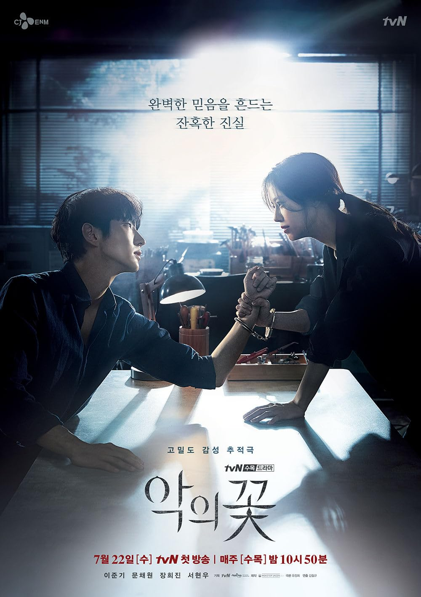
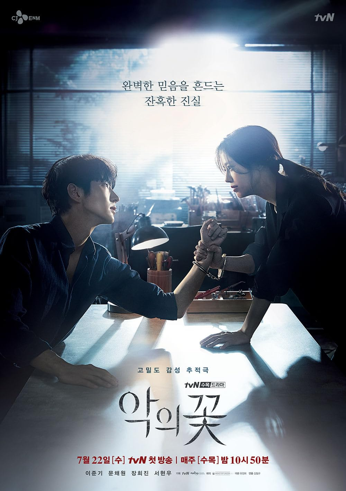

My five pictures of vintage San Francisco's Chinatown at night
I just personally like all of these vintage night scene images of San Francisco's Chinatown. I think that all of the neon and the lights add so much character and vibrance to that area. Everytime I walk in Chinatown at night it does not look like
this as it just feels very empty and quiet. The street view is still the same but there is no more neon signs or any buildings that are adroned in lights anymore. That's why I really like and appreciate these pictures as it gives a record of the past.
The Sun Sing Theater marquee lit at night as the neon tubes outline the pagoda marquee in 1956. The veritical sign in chinese which translates to
sun sing theater is also lit in neon as it outlines the chinese characters and the vertical outline of the sign.
A 1956 night view at clay street looking towards grant avenue. Neon signs are lit up and lined throughout the street adorning shops. There is a noticeable neon pagoda sign in the background along with lighted lanterns
strung across from the buildings and street lamps illuminating the street.
A night view of the Chinatown Wax Museum at Grant Avenue and Califronia Street. The building along with its pagoda architecture is outlined with light bulbs highlighting
the building's architecural details.
A 1950s night view of Grant Avenue looking towards the direction of Clay street. Lights are strung across the street lamps, multiple neon signs are lit up adorning store fronts
along the street including some buildings being illuminated by light bulbs or neon oultining the building's details. Many people are still walking on the streets with heavy traffic on grant avenue.
A 1963 night view from Grant near Sacramento looking towards Pine Street. Neon signs are seen lined along the street lit up such as Republic hotel, Kan's, Far east cuisine, Lamps of china, and more. Lanterns are lit up
as they are strung across from each buildings over the street as there is some moderate traffic going down Grant.
 
